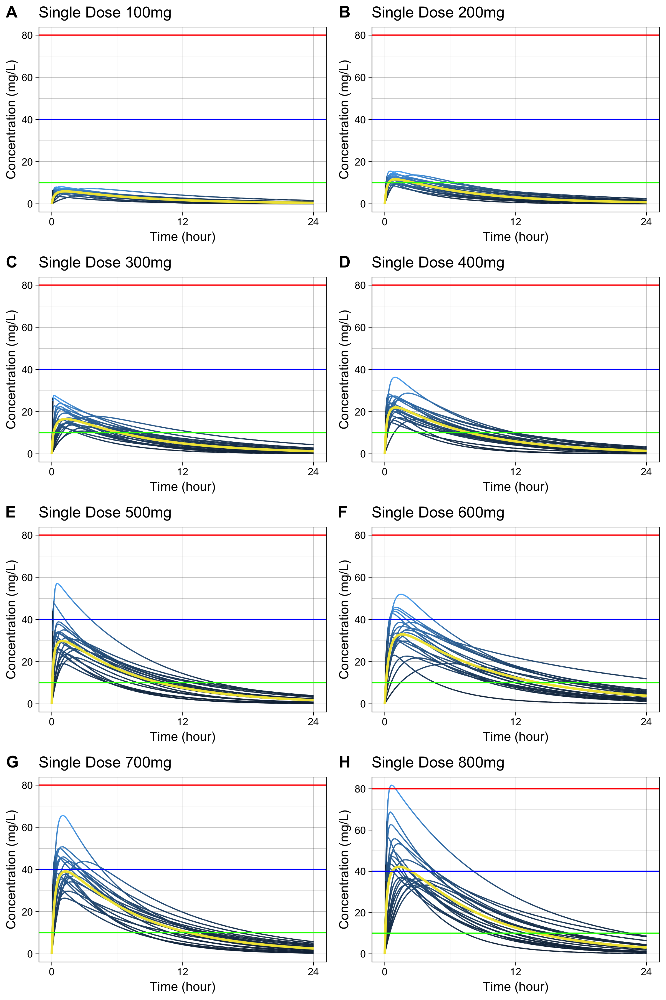
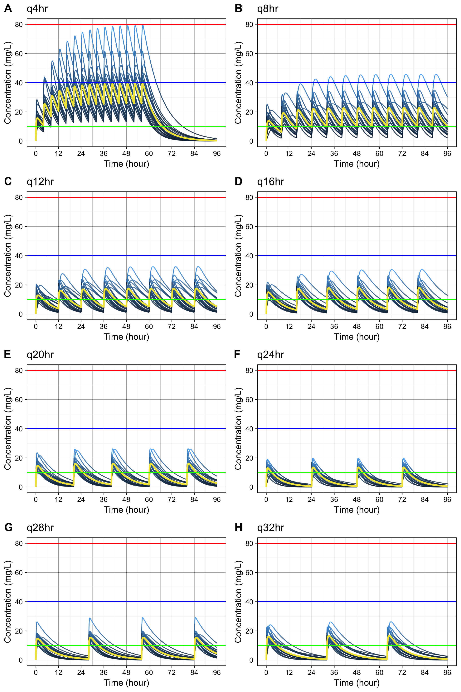

Monte Carlo Simulation of Plasma Caffeine Concentrations by Using Population Pharmacokinetic Model
- This package is used for publication of the paper about pharmacokinetics of plasma caffeine.
- Gitbook http://asancpt.github.io/CaffeineEdison is created solely dependent on this R package.
- Reproducible research is expected.
Installation
install.pacakges("devtools")
devtools::install_github("asancpt/caffsim")
# Simply create single dose dataset
caffsim::caffDataset(Weight = 20, Dose = 200, N = 20)
# Simply create multiple dose dataset
caffsim::caffDatasetMulti(Weight = 20, Dose = 200, N = 20, Tau = 12) Single dose
Create a PK dataset for caffeine single dose
library(caffsim)
MyDataset <- caffDataset(Weight = 20, Dose = 200, N = 20)
head(MyDataset) Tmax Cmax AUC Half_life CL V Ka1 1.4655830 15.242413 192.15030 7.650004 1.040852 11.48993 2.2963746 2 0.6206477 13.394232 80.59684 3.713971 2.481487 13.29895 5.6941801 3 0.4287541 16.644154 153.47752 6.085728 1.303122 11.44365 10.7121364 4 2.3118151 13.733302 136.49352 4.999064 1.465271 10.56996 0.9882366 5 0.3769276 8.929723 46.23018 3.315964 4.326178 20.70051 10.6341988 6 1.8191187 6.068538 49.95030 4.235773 4.003980 24.47323 1.3051557 Ke 1 0.09058818 2 0.18659273 3 0.11387299 4 0.13862596 5 0.20898898 6 0.16360650
Create a dataset for concentration-time curve
MyConcTime <- caffConcTime(Weight = 20, Dose = 200, N = 20)
head(MyConcTime)Subject Time Conc 1 1 0.0 0.000000 2 1 0.1 3.631070 3 1 0.2 6.003892 4 1 0.3 7.534792 5 1 0.4 8.502650 6 1 0.5 9.094273

Create plots for publication (according to the amount of caffeine)
-
cowplotpackage is required
#install.packages("cowplot") # if you don't have it
library(cowplot)
MyPlotPub <- lapply(
c(seq(100, 800, by = 100)),
function(x) caffPlotMulti(caffConcTime(20, x, 20)) +
theme(legend.position="none") +
labs(title = paste0("Single Dose ", x, "mg")))
plot_grid(MyPlotPub[[1]], MyPlotPub[[2]],
MyPlotPub[[3]], MyPlotPub[[4]],
MyPlotPub[[5]], MyPlotPub[[6]],
MyPlotPub[[7]], MyPlotPub[[8]],
labels=LETTERS[1:8], ncol = 2, nrow = 4)
Multiple dose
Create a PK dataset for caffeine multiple doses
MyDatasetMulti <- caffDatasetMulti(Weight = 20, Dose = 200, N = 20, Tau = 12)
head(MyDatasetMulti) TmaxS CmaxS AUCS AI Aavss Cavss Cmaxss1 0.6874280 13.464072 141.82443 1.417829 163.35101 11.818702 20.473750 2 0.4241709 10.966504 54.76227 1.077016 75.65927 4.563523 12.965405 3 0.7065063 7.140538 55.43862 1.221005 116.76742 4.619885 9.641678 4 0.9717726 14.418648 96.82411 1.136089 94.05287 8.068676 19.452172 5 1.0669306 12.002853 88.39679 1.168734 103.12543 7.366399 16.662146 6 1.7867751 9.243687 65.45688 1.095977 81.95498 5.454740 14.558817 Cminss 1 6.0335344 2 0.9271434 3 1.7451689 4 2.3301166 5 2.4055714 6 1.2749520
Create a dataset for concentration-time curve
MyConcTimeMulti <- caffConcTimeMulti(Weight = 20, Dose = 200, N = 20, Tau = 12, Repeat = 10)
head(MyConcTimeMulti)Groups: Subject [1]
Subject Time Conc
Create plots for publication (according to dosing interval)
-
cowplotpackage is required
#install.packages("cowplot") # if you don't have it
library(cowplot)
MyPlotMultiPub <- lapply(
c(seq(4, 32, by = 4)),
function(x) caffPlotMulti(caffConcTimeMulti(20, 250, 20, x, 15)) +
theme(legend.position="none") +
labs(title = paste0("q", x, "hr" )))
plot_grid(MyPlotMultiPub[[1]], MyPlotMultiPub[[2]],
MyPlotMultiPub[[3]], MyPlotMultiPub[[4]],
MyPlotMultiPub[[5]], MyPlotMultiPub[[6]],
MyPlotMultiPub[[7]], MyPlotMultiPub[[8]],
labels=LETTERS[1:8], ncol = 2, nrow = 4)